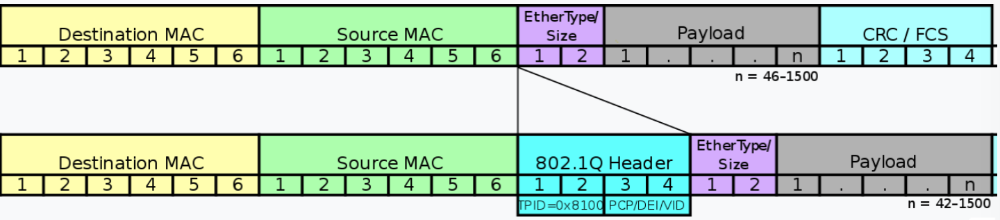

一次 tcpdump bpf filter “失效”的问题排查¶
最近需要用到 bpf filter 来过滤并获取 pcap 文件中的部分流量记录，但测试的时候发现某些情况下，明明 tcpdump 出的流量中确定肯定以及一定包含某些流量，但是使用 bpf filter 就是过滤不出来。
# tcpdump -nn -r /data0/logs/suricata/log.pcap.1598593582 |head -n3
reading from file /data0/logs/suricata/log.pcap.1598593582, link-type EN10MB (Ethernet)
13:46:22.094881 IP 42.81.204.36.80 > 192.168.8.22.49189: Flags [.], seq 3815694858:3815696198, ack 1160728615, win 70, length 1340: HTTP
13:46:22.097504 IP 39.82.42.178 > 172.19.70.2: ICMP 39.82.42.178 udp port 9253 unreachable, length 56
13:46:22.098363 IP 192.168.8.22.49189 > 42.81.204.36.80: Flags [.], ack 0, win 1658, length 0
比如上面第三行的流量，当用以下 filter 来过滤的时候就没有结果。
# tcpdump -nn -r /data0/logs/suricata/log.pcap.1598593582 \
'src host 192.168.8.22 and src port 49189 and dst host 42.81.204.36 and dst port 80'
打印出 bpf filter 翻译出的字节码：
# tcpdump -nn -d 'src host 192.168.8.22 and src port 49189 and dst host 42.81.204.36 and dst port 80'
(000) ldh [12]
(001) jeq #0x800 jt 2 jf 24
(002) ld [26]
(003) jeq #0xc0a80816 jt 4 jf 24
(004) ldb [23]
(005) jeq #0x84 jt 8 jf 6
(006) jeq #0x6 jt 8 jf 7
(007) jeq #0x11 jt 8 jf 24
(008) ldh [20]
(009) jset #0x1fff jt 24 jf 10
(010) ldxb 4*([14]&0xf)
(011) ldh [x + 14]
(012) jeq #0xc025 jt 13 jf 24
(013) ld [30]
(014) jeq #0x2a51cc24 jt 15 jf 24
(015) ldb [23]
(016) jeq #0x84 jt 19 jf 17
(017) jeq #0x6 jt 19 jf 18
(018) jeq #0x11 jt 19 jf 24
(019) ldh [20]
(020) jset #0x1fff jt 24 jf 21
(021) ldh [x + 16]
(022) jeq #0x50 jt 23 jf 24
(023) ret #262144
(024) ret #0
字节码解释：
|
加载第 12 个字节开始的 2 个字节（Ethertype） |
|
如果是 IPv4 的包，goto #2 else #24 |
|
加载第 26 个字节开始的 4 个字节（Src IP 地址） |
|
如果地址匹配，goto #4 else #24 |
|
加载第 13 个字节开始的 1 个字节（IPv4 协议） |
|
如果协议是 SCTP，goto #8 else #6 |
|
如果协议是 TCP，goto #8 else #7 |
|
如果协议是 UDP，goto #8 else #24 |
|
加载第 20 个字节开始的 2 个字节（Fragment Offset） |
|
如果 fragment offset & 0x1fff != 0, #24 else #10 |
|
x = IP header 长度 |
|
加载 x+14 处开始的 2 个字节（TCP Src Port） |
|
如果端口匹配，goto #13 else #24 |
| （目标IP 端口匹配）… | … |
|
匹配 |
|
不匹配 |
从 pcap 文件中取出第三条流量日志的原始二进制数据：
58 69 6c 6a e6 17 58 69 6c 64 47 a9 81 00 0f fe
08 00 45 00 00 28 9f 91 40 00 3f 06 dd 0a c0 a8
08 16 2a 51 cc 24 c0 25 00 50 45 2f 50 27 e3 6e
e2 0a 50 10 06 7a ce e0 00 00 00 00 00 00 00 00
按照字节码手工执行发现，该流量数据的 Ethertype 并不是 0x800 IPv4 frame，而是 0x8100 VLAN-tagged frame (IEEE 802.1Q)，该格式比普通的 Ethernet frame 多了 4 个字节，因为 bpf 的匹配都是基于偏移量的，也就都匹配不上了。
搜索可以发现，tcpdump 有一个 -e 选项可以打印出更详细的 ethernet header 信息 🤦 。
# tcpdump -nn -e -r /data0/logs/suricata/log.pcap.1598593582 |head -n3
reading from file /data0/logs/suricata/log.pcap.1598593582, link-type EN10MB (Ethernet)
13:46:22.094881 58:69:6c:6a:e6:17 > 58:69:6c:64:47:a9, ethertype IPv4 (0x0800), length 1394: 42.81.204.36.80 > 192.168.8.22.49189: Flags [.], seq 3815694858:3815696198, ack 1160728615, win 70, length 1340: HTTP
13:46:22.097504 58:69:6c:6a:e6:17 > 58:69:6c:64:47:a9, ethertype IPv4 (0x0800), length 90: 39.82.42.178 > 172.19.70.2: ICMP 39.82.42.178 udp port 9253 unreachable, length 56
13:46:22.098363 58:69:6c:64:47:a9 > 58:69:6c:6a:e6:17, ethertype 802.1Q (0x8100), length 64: vlan 4094, p 0, ethertype IPv4, 192.168.8.22.49189 > 42.81.204.36.80: Flags [.], ack 0, win 1658, length 0
bpf filter 中有一个 vlan [vlan_id] filter 可以用来过滤带有 vlan tag 的流量（vlan 为 true 的情况下会自动修正偏移量）。如果需要同时过滤带和不带 vlan tag 的流量，可以使用类似下面这样的语法：
# tcpdump -nn "<filter> or (vlan and <filter>)"
参考：
- https://tshark.dev/packetcraft/arcana/bpf_instructions/#bpf-instructions-explained
- EtherType 和协议对照表: https://en.wikipedia.org/wiki/EtherType#Examples
- IPv4 Protocol numbers: https://en.wikipedia.org/wiki/List_of_IP_protocol_numbers
- https://christian-rossow.de/articles/tcpdump_filter_mixed_tagged_and_untagged_VLAN_traffic.php
- https://wiki.wireshark.org/Development/LibpcapFileFormat
- https://en.wikipedia.org/wiki/IEEE_802.1Q#Frame_format